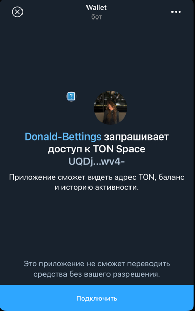
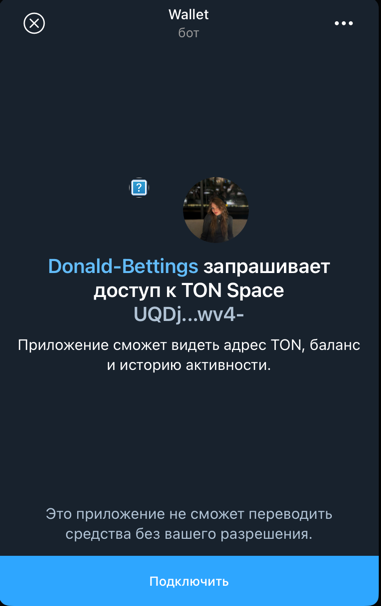

Лабораторная работа №4: Разработка интерфейсов и интеграция с серверной частью
Задача проекта
Разработать клиентские интерфейсы для работы с платформой предсказательного беттинга на базе блокчейна, настроить их взаимодействие с серверной частью.
Используемые библиотеки и их назначение
Для фронтенда:
@tonconnect/ui-react: Управление подключением кошелька и интеграцией с блокчейном Ton.react,react-router-dom: Реализация пользовательского интерфейса с навигацией.tailwindcss: Современный CSS-фреймворк для стилизации компонентов.react-select: Улучшенные выпадающие списки для выбора торговых пар.react-toastify: Уведомления об ошибках, успехах и других событиях.
Описание страниц интерфейса
Главная страница
- Описание: Начальная страница, приветствующая пользователей и предоставляющая возможность подключения кошелька.
- Основные функции:
- Приветственное сообщение и описание платформы.
- Кнопка TonConnect для подключения кошелька.
- Кнопки "Играть" и "Узнать больше" для навигации.
 

Логика реализации:
- Подключение кошелька: Используется
TonConnectButtonдля взаимодействия с TonConnect. - Предзагрузка данных: При помощи функций
getPairs()иfetchTime()данные о парах и текущем времени блока загружаются и сохраняются в контексте черезsetData. - Обработка ошибок: Ошибки подключения и загрузки данных отображаются в пользовательском интерфейсе.
- Переходы: Кнопки навигации управляют переходом на другие страницы с использованием
useNavigate.
Страница ставок
- Описание: Предоставляет интерфейс для выбора торговых пар и размещения ставок. При первом открытии пользователю показываются инструкции.
- Основные функции:
- Выбор торговой пары.
- Ввод предсказания (вектор цены/направления движения).
- Подтверждение и отправка ставки.

- на изображении: желтая стрелка - агрегированная ставка всех пользователей за прошлый блок, белая стрелка - ставка юзера за прошлый блок, ее же можно двигать, переключая моды осей, чтобы пояставить новую ставку.
Логика реализации:
- Трёхмерный интерфейс ставок: Пользователи видят трехмерный график, на котором агрегированные ставки всех участников за прошлый блок и своя ставка в виде стрелок на графике.
- Обратная связь: После отправки пользователь получает уведомление о статусе ставки.
Страница управления кошельком
- Описание: Позволяет пользователю управлять балансом кошелька, включая пополнение и вывод средств.
- Основные функции:
- Форма пополнения депозита через TON.
- Форма вывода средств на кошелек юзера.
- История транзакций с отображением их статуса.
- История ставок с отображением их статуса.

Логика реализации:
- Обработка пополнения: Запросы на сервер для обработки депозитов и их конвертации в токены платформы.
- Вывод средств: Инициирование транзакции на указанный адрес (есть возможность сменить адрес).
Страница балансов юзера
- Описание: Позволяет пользователю узнать его оставшийся депозит в игре, а также количество токенов находящихся 'at risk'.
- Основные функции:
- Отображение балансов юзера.
- Кнопка для отключения кошелька.

Логика реализации:
- Обработка пополнения: Запросы на сервер для плучения балансов.
Реализация авторизации
Диаграмма процесса авторизации

Описание работы
Авторизация на платформе организована через интеграцию с блокчейном Ton и использованием механизма ton_proof. Весь процесс проходит несколько ключевых этапов:
- Подключение кошелька:
- Клиент отправляет запрос на сервер для генерации
payload. -
Пользователь подключает кошелёк через интерфейс TonConnect на клиенте, отправляя
payloadконтракту кошелька. -
Подписание proof:
- Полученный
payloadподписывается приватным ключом кошелька пользователя. -
Подписанный
proofвозвращается клиенту, а затем отправляется на сервер для проверки. -
Проверка proof:
- Сервер валидирует подпись, используя публичный ключ кошелька пользователя пользователя.
-
Если proof валиден, сервер генерирует пару токенов (access и refresh) и отправляет их клиенту.
-
Хранение и использование токенов:
- Токены сохраняются в
localStorageна клиенте и используются для авторизации запросов к API. - При истечении срока действия токенов клиент автоматически обновляет их через refresh-токен.
Основные компоненты
1. Фронтенд: Контекст авторизации
import React, { createContext, useContext } from "react";
import { verifyPayload } from "../services/api";
const AuthContext = createContext();
export const AuthProvider = ({ children }) => {
const loginWithProof = async (proofData) => {
const { accessToken, refreshToken } = await verifyPayload(proofData);
localStorage.setItem("authToken", accessToken);
localStorage.setItem("refreshToken", refreshToken);
};
return (
<AuthContext.Provider value={{ loginWithProof }}>{children}</AuthContext.Provider>
);
};
Объяснение:
- Функция loginWithProof выполняет запрос на сервер для проверки proof и сохраняет токены в локальное хранилище.
2. Фронтенд: Интерсепторы для обновления токенов
Интерсепторы помогают автоматически обрабатывать запросы и ответы API. Это особенно полезно для управления обновлением токенов, когда срок действия текущего токена истекает.
Код настройки интерсепторов
- Создание экземпляра Axios:
const apiClient = axios.create({
baseURL: BASE_URL,
});
Здесь создаётся экземпляр axios с базовым URL, указывающим на API сервера. Все запросы будут направляться на этот адрес.
- Получение токенов из локального хранилища:
function getAccessToken(): string | null {
return localStorage.getItem("authToken");
}
function getRefreshToken(): string | null {
return localStorage.getItem("refreshToken");
}
Эти функции возвращают токены из localStorage, если они существуют, или null, если токен отсутствует.
- Обновление токенов:
const refreshAuthLogic = (failedRequest: AxiosError) =>
apiClient
.post<RefreshedTokens>(
"/auth/refresh",
{},
{
headers: {
"X-Refresh-Token": getRefreshToken(),
},
}
)
.then((tokenRefreshResponse) => {
localStorage.setItem("authToken", tokenRefreshResponse.data.accessToken);
localStorage.setItem(
"refreshToken",
tokenRefreshResponse.data.refreshToken,
);
failedRequest.response!.config.headers["Authorization"] =
"Bearer " + tokenRefreshResponse.data.accessToken;
return Promise.resolve();
});
Когда запрос получает ошибку 401 (Unauthorized), интерсептор автоматически вызывает /auth/refresh для получения новых токенов.
- Интеграция с
axios-auth-refresh:
createAuthRefreshInterceptor(apiClient, refreshAuthLogic, {
pauseInstanceWhileRefreshing: true,
});
Эта библиотека упрощает процесс обновления токенов, автоматически выполняя логику из refreshAuthLogic для каждого запроса с истёкшим токеном.
- Обработка запросов:
apiClient.interceptors.request.use(
(config) => {
const token = getAccessToken();
if (token) {
config.headers.Authorization = `Bearer ${token}`;
}
return config;
},
(error) => Promise.reject(error),
);
Этот интерсептор добавляет заголовок Authorization ко всем запросам, если токен авторизации доступен.
3. Логика авторизации на главной странице
Код авторизации на HomePage
Взаимодействия с TonConnect на главной странице
useEffect(() => {
tonConnectUI.setConnectRequestParameters({ state: "loading" });
const initTonConnect = async () => {
try {
const tonProofPayload = await getPayload();
if (tonProofPayload) {
tonConnectUI.setConnectRequestParameters({
state: "ready",
value: { tonProof: tonProofPayload.payload },
});
} else {
tonConnectUI.setConnectRequestParameters(null);
}
} catch (error) {
console.error("[HomePage]: Error during initialization:", error);
setError(
error instanceof Error ? error.message : "Unknown error occurred."
);
} finally {
setLoading(false);
}
};
initTonConnect();
}, []);
Объяснение логики:
1. Инициализация TonConnect:
- tonConnectUI.setConnectRequestParameters сначала устанавливает состояние как loading, что указывает на начальную загрузку.
- Затем происходит асинхронный вызов функции getPayload, которая обращается к серверу для получения уникального tonProofPayload.
- Установка параметров подключения:
- Если
tonProofPayloadуспешно получен, он передается вtonConnectUIдля установки параметров подключения. -
Если загрузка не удалась, параметры сбрасываются.
-
Обработка ошибок:
-
Ошибки при выполнении асинхронного кода обрабатываются и логируются. В случае ошибки пользователь получает сообщение.
-
Завершение загрузки:
- Независимо от результата, состояние загрузки (
loading) завершается.
4.Запросы к бэкенду
Клиентское приложение взаимодействует с сервером через API, используя предварительно настроенный клиент Axios. Вот пример одного из запросов:
export async function getUserBets(): Promise<UserBetsResponse> {
try {
const response = await apiClient.get<UserBetsResponse>("/user/bets");
return response.data;
} catch (error) {
console.error("Error fetching user bets:", error);
throw error;
}
}
Объяснение:
1. Назначение:
Запрос получает список ставок пользователя, обращаясь к эндпоинту /user/bets.
- Обработка ошибок:
- Любая ошибка при выполнении запроса логируется.
-
Если сервер недоступен или вернул ошибку, она пробрасывается в вызывающий компонент.
-
Типизация:
- Используется строгая типизация ответа с помощью
Promise<UserBetsResponse>, что позволяет интегрироваться с остальными компонентами приложения.
5.Описание PrefetchedData и связанных запросов
PrefetchedData представляет собой контекст для управления ключевыми данными приложения, такими как список торговых пар, данные свечей, текущее время блока и выбранная пара. Этот подход улучшает производительность приложения за счет предварительной загрузки данных и их централизованного управления.
Как работает PrefetchedData
- Инициализация контекста: Контекст создается для хранения данных, методов управления и состояния загрузки. Он включает:
pairs— список доступных торговых пар.candles— данные свечей для выбранной пары.time— оставшееся время текущего блока.selectedPair— выбранная пользователем пара.-
Методы для загрузки данных (
fetchCandlesForPair) и выбора пары (setSelectedPair). -
Параллельные запросы в
useEffect: ВнутриuseEffectзапускаются два параллельных запроса: - Для получения списка пар (
fetchPairs). -
Для получения времени блока (
fetchTimeData). -
Реализация запросов:
Загрузка пар (fetchPairs):
const fetchPairs = async (): Promise<void> => {
try {
const pairsResponse = await getPairs();
if (!pairsResponse || !Array.isArray(pairsResponse)) {
console.warn("Данные пар невалидны, повторный запрос через 5 секунд...");
setTimeout(fetchPairs, 5000);
return;
}
const pairs = pairsResponse.map((pair) => ({
value: pair.pair_id,
label: pair.name,
}));
console.log("pairs", pairs);
setData((prev) => ({ ...prev, pairs })); // Обновляем только пары
} catch (error) {
console.error("Ошибка при загрузке пар:", error);
setTimeout(fetchPairs, 5000); // Повторяем запрос через 5 секунд
}
};
Логика:
- Получает данные через API-запрос к /pair.
- Проверяет валидность ответа и преобразует его в формат, подходящий для использования в react-select.
- При ошибке повторяет запрос через 5 секунд.
Загрузка времени блока (fetchTimeData):
const fetchTimeData = async (): Promise<void> => {
try {
const timeResponse = await fetchTime();
if (!timeResponse || timeResponse.remaining_time_in_block === 0) {
console.warn("Данные времени невалидны, повторный запрос через 5 секунд...");
setTimeout(fetchTimeData, 5000);
return;
}
console.log("time", timeResponse);
setData((prev) => ({ ...prev, time: timeResponse.remaining_time_in_block })); // Обновляем только время
} catch (error) {
console.error("Ошибка при загрузке времени:", error);
setTimeout(fetchTimeData, 5000); // Повторяем запрос через 5 секунд
}
};
Логика:
- Получает время блока через API-запрос к /chain/time.
- Проверяет корректность данных времени и обновляет состояние.
- При ошибке также запускает повторный запрос.
Связь запросов с PrefetchedData
-
Инициализация данных: При загрузке страницы в
useEffectпроисходит вызов двух функций:tsx useEffect(() => { const fetchData = (): void => { fetchPairs(); fetchTimeData(); }; fetchData(); // Запускаем первый цикл запросов }, [data.selectedPair]);Эти функции обновляютpairsиtimeвнутриPrefetchedData, что делает их доступными для компонентов. -
Обновление данных свечей: Когда пользователь выбирает пару,
setSelectedPairавтоматически вызываетfetchCandlesForPair, чтобы обновить свечи для выбранной пары:tsx const setSelectedPair = (pair: PairOption | null) => { setData((prev) => ({ ...prev, selectedPair: pair })); if (pair?.value) { fetchCandlesForPair(pair.value); } };
Загрузка свечей (fetchCandlesForPair):
const fetchCandlesForPair = async (pairId: string) => {
setData((prev) => ({ ...prev, isLoading: true, error: null }));
try {
const candles = await fetchCandles(pairId);
setData((prev) => ({ ...prev, candles, isLoading: false }));
console.log("data.candles", candles);
} catch (err) {
console.error(`Ошибка при загрузке данных для пары ${pairId}:`, err);
setData((prev) => ({
...prev,
error: (err as Error).message || "Не удалось загрузить данные свечей",
isLoading: false,
}));
}
};
Логика:
- Загружает данные свечей через API-запрос.
- Обновляет candles в PrefetchedData, что делает их доступными для визуализации.